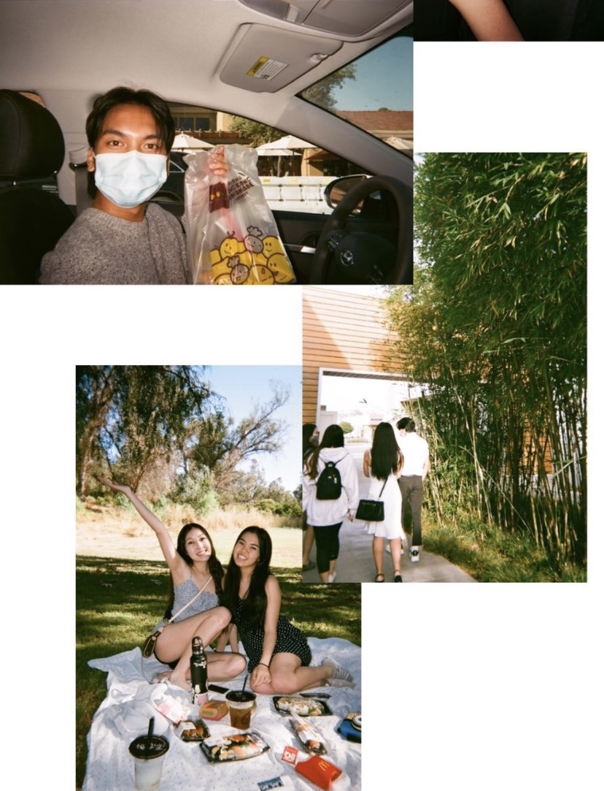

Lauren Tran
Hello, my name is Lauren Tran. At the moment I am a full-time student at UCR. I am currently majoring in Pre-Business, looking to earn a degree in Business Administration with a marketing/communications emphasis. As of right now, my goal is to study abroad in either Taiwan or Korea, hopefully once Covid-19 is a bit more under control. I also am looking forward to graduating and later, going to go to graduate school. My dream career is to work under a music agency or label.
In order to fulfill my dreams, I hope to apply for internships at different companies where it could lead me to working in the office or at concert venues. To add on, the reason why I wanted to pursue this field in the industry is because I love all different types of music wholeheartedly. I grew up in a very musical setting as I learned three different instruments as a child and when I was in middle school and high school, I did dance at studios and on the school team. I was constantly surrounded by music and because I am knowledgeable about many different genres, I can scope out what is on trend at the moment. Another aspect I love about music is seeing artists live at concerts. For many people, concerts are an escape from reality and after attending so many, I was always curious to how things operated behind the scenes. Scheduling, event-planning, consulting with others, and advertising are just some of the facets of the work and time that staff members have to go through to make the event happen.
In addition, I have many skills that are able to be utilized for future occupations and opportunities. To start, I love learning languages for fun and at the moment, I am able to speak English, Spanish, and Vietnamese. Right now, I am learning to read and write Korean but hopefully later I am able to comprehend the language completely. To add on, I have 200+ hours of community service and experience in working jobs from all different sides of the spectrum. I’ve worked jobs like being in retail at a beauty supply store to even fixing and analyzing glasses at an optometry. Furthermore, I have many strengths in attributes like networking and communication, Photoshop and photography, teamwork, leadership, and more.
Experience
Sales Representative
• Worked as a cashier
• Organizing supplies and color-coding products
• Carrying heavy boxes
Intern
• Responsible for sanitizing all items
• Scanning & analyzing glasses' prescriptions
Board Member
• Appointed as the club's historian (17-18)
• Appointed as the club's Treasurer (19-20)
• Promotes skills in leadership, communication, inclusivity, etc.
• Recruited over 200 new members
Education
UC Riverside
Fountain Valley
Portfolio
